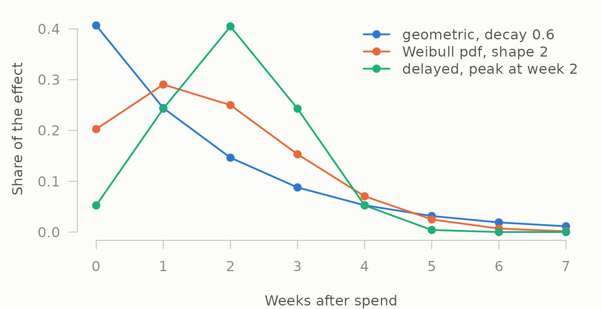
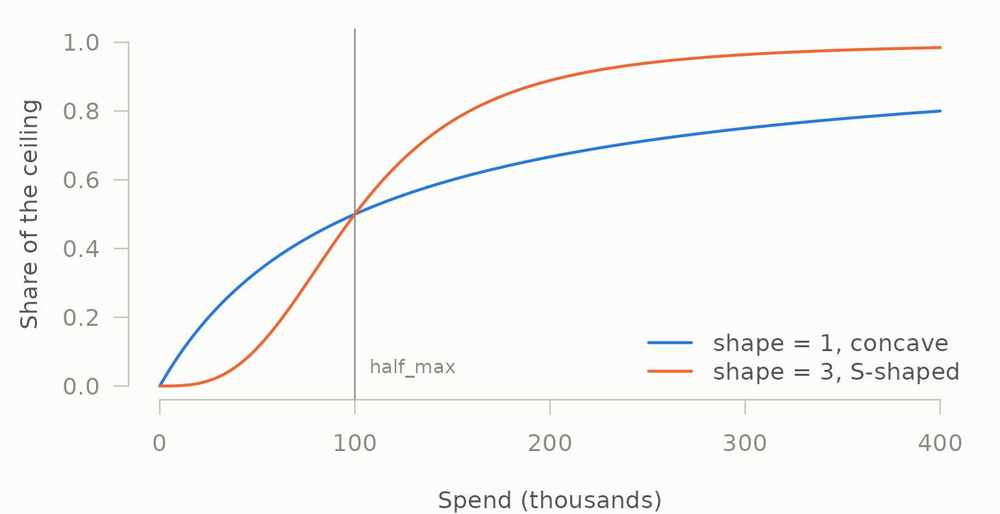
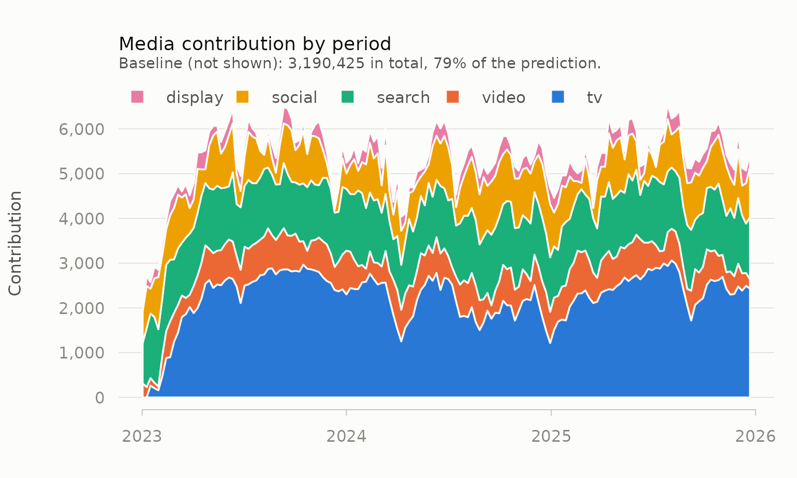
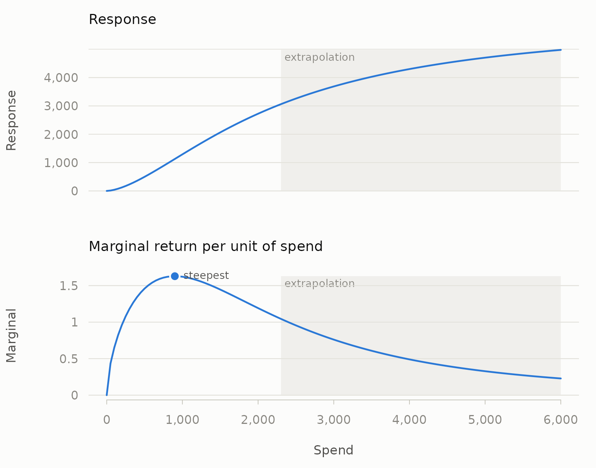

mediamix turns raw marketing data into model-ready features. It does
two things, and deliberately not a third: it converts media spend into
carryover- and saturation-adjusted regressors, and it converts raw event
logs into attributed customer journeys. It does not fit models.
lm(), glmnet and brms already do
that better than a marketing package would.
This vignette walks the whole arc on the media side: raw weekly spend, through diagnostics and transforms, to a fitted model, contributions and return on investment.
library(mediamix)
data(mm_weekly)
north <- mm_weekly[mm_weekly$geo == "north", ]
channels <- c("tv", "video", "search", "social", "display")
str(north[, c("date", channels, "price", "revenue")])
#> 'data.frame': 156 obs. of 8 variables:
#> $ date : Date, format: "2023-01-02" "2023-01-09" ...
#> $ tv : num 0 0 2193 0 0 ...
#> $ video : num 399 0 0 0 0 584 482 824 0 251 ...
#> $ search : num 277 488 568 576 401 424 614 481 357 423 ...
#> $ social : num 296 328 0 303 500 182 126 348 435 428 ...
#> $ display: num 0 280 0 251 0 306 0 348 222 0 ...
#> $ price : num 22.1 25 25.3 25 26.8 ...
#> $ revenue: num 27130 20433 20481 20565 17574 ...Look before you transform
Most marketing mix projects fail for reasons visible in the data
before any model is fitted. diagnose_media() runs those
checks.
diagnose_media(mm_weekly, media = channels, by = "geo")
#>
#> ── Media diagnostics
#> 468 observations across 3 series, 5 channels
#> ✔ No structural problems found.
#>
#> Inspect $variation, $collinearity, $correlations.Nothing structural is wrong here, which is what you would expect from synthetic data. On real data this is where you learn that two channels were planned together and their coefficients will therefore flip sign on any small change to the specification. The detail is in the pieces:
d <- diagnose_media(mm_weekly, media = channels, by = "geo")
d$variation
#> channel mean sd cv distinct zero_share low_variation
#> 1 tv 1700.5 881.7 0.5096 131 0.1474 FALSE
#> 2 video 336.3 308.6 0.8939 84 0.4167 FALSE
#> 3 search 487.1 115.6 0.2286 118 0.0000 FALSE
#> 4 social 251.2 174.9 0.6613 101 0.2756 FALSE
#> 5 display 188.1 149.3 0.7584 88 0.3333 FALSE
#> heavily_flighted usable
#> 1 FALSE TRUE
#> 2 FALSE TRUE
#> 3 FALSE TRUE
#> 4 FALSE TRUE
#> 5 FALSE TRUERead zero_share as the worst geography’s dark-week rate,
not an overall average: with by supplied, every column here
reports the worst case across series, which is what you want from a
diagnostic. video goes dark in 42% of weeks in its worst
geography and display in a third. That is normal — media is
flighted — but it means those channels carry less information than 156
weeks per geography suggests.
Carryover
Advertising does not stop working the week it runs. Adstock spreads each period’s spend forward with geometric decay.
spend <- c(100, 0, 0, 0, 0, 0)
round(adstock_geometric(spend, decay = 0.5), 2)
#> [1] 50.00 25.00 12.50 6.25 3.12 1.56Practitioners think in half-lives, not decay coefficients, so the package provides the translation and uses it everywhere:
theta <- decay_from_half_life(3) # a three-week half-life on weekly data
theta
#> [1] 0.7937
half_life(theta)
#> [1] 3
effective_window(theta, coverage = 0.90)
#> [1] 10That last line says a three-week half-life still has 10% of its effect outstanding after 10 weeks — which is how you decide whether truncating the kernel costs you anything, and whether 156 weeks of data can identify a carryover this long at all.
Normalisation changes what your coefficient means
This is the argument that most often changes an answer without anyone noticing, so it is explicit rather than implied.
constant <- rep(100, 50)
tail(adstock_geometric(constant, decay = 0.8), 1) # 100
#> [1] 100
tail(adstock_geometric(constant, decay = 0.8, normalise = FALSE), 1) # 500
#> [1] 500Normalised, the kernel sums to 1: a constant spend of 100 adstocks to
100, the series level is preserved, and the fitted coefficient reads as
the effect of one unit of media. Unnormalised — raw Koyck
accumulation — the same series accumulates to
100 / (1 - 0.8), and the coefficient reads as the effect of
one unit of accumulated media. Both are defensible. Comparing a
coefficient fitted one way against a coefficient fitted the other is
not.
mediamix defaults to normalised, as does the Bayesian MMM of Jin et
al. (2017). Robyn’s geometric adstock does not, so if you are
reconciling against Robyn, set normalise = FALSE.
Dark weeks
Media data is full of zero-spend weeks, and carryover has to survive them:
flighted <- c(100, 100, 0, 0, 0, 0, 100)
round(adstock_geometric(flighted, decay = 0.6), 2)
#> [1] 40.00 64.00 38.40 23.04 13.82 8.29 44.98Carryover decays across the gap rather than resetting, and the new burst adds to what is left.
Delayed peaks
A geometric kernel always peaks in the period of spend. Television and out-of-home routinely do not, and no decay rate fixes that. Weibull adstock can:
w_geo <- adstock_weights(8, decay = 0.6)
w_wei <- adstock_weights_weibull(8, shape = 2, scale = 3, type = "pdf")
w_del <- adstock_weights_delayed(8, decay = 0.6, peak = 2)
round(rbind(geometric = w_geo, weibull = w_wei, delayed = w_del), 3)
#> [,1] [,2] [,3] [,4] [,5] [,6] [,7] [,8]
#> geometric 0.407 0.244 0.146 0.088 0.053 0.032 0.019 0.011
#> weibull 0.203 0.290 0.250 0.153 0.070 0.025 0.007 0.001
#> delayed 0.052 0.243 0.405 0.243 0.052 0.004 0.000 0.000
which.max(w_wei)
#> [1] 2The delayed kernel of Jin et al. (2017) does the same with a
peak read directly in weeks. The three shapes side by
side:
cols <- mm_palette(3)
ink <- mm_palette(role = "ink")
op <- par(mar = c(4, 4.5, 1, 1), bg = ink[["surface"]], fg = ink[["axis"]])
matplot(0:7, cbind(w_geo, w_wei, w_del), type = "o", pch = 19, lty = 1,
lwd = 2, col = cols, xlab = "Weeks after spend",
ylab = "Share of the effect", las = 1, bty = "n",
col.axis = ink[["muted"]], col.lab = ink[["secondary"]])
legend("topright", c("geometric, decay 0.6", "Weibull pdf, shape 2",
"delayed, peak at week 2"),
col = cols, lwd = 2, pch = 19, bty = "n", text.col = ink[["secondary"]])
par(op)Saturation
Adstock says when money works. Saturation says how hard it works at the margin.
levels <- c(0, 25, 50, 100, 200, 400) * 1000
round(rbind(
concave = saturate_hill(levels, half_max = 100000),
s_shape = saturate_hill(levels, half_max = 100000, shape = 3)
), 3)
#> [,1] [,2] [,3] [,4] [,5] [,6]
#> concave 0 0.200 0.333 0.5 0.667 0.800
#> s_shape 0 0.015 0.111 0.5 0.889 0.985
grid_spend <- seq(0, 400000, by = 2000)
op <- par(mar = c(4, 4.5, 1, 1), bg = ink[["surface"]], fg = ink[["axis"]])
plot(grid_spend / 1000, saturate_hill(grid_spend, half_max = 100000),
type = "l", lwd = 2, col = cols[1], ylim = c(0, 1), las = 1, bty = "n",
xlab = "Spend (thousands)", ylab = "Share of the ceiling",
col.axis = ink[["muted"]], col.lab = ink[["secondary"]])
lines(grid_spend / 1000, saturate_hill(grid_spend, 100000, shape = 3),
lwd = 2, col = cols[2])
abline(v = 100, col = ink[["muted"]])
text(100, 0.05, "half_max", pos = 4, cex = 0.8, col = ink[["muted"]])
legend("bottomright", c("shape = 1, concave", "shape = 3, S-shaped"),
col = cols[1:2], lwd = 2, bty = "n", text.col = ink[["secondary"]])
par(op)half_max is the spend at which the response reaches half
its ceiling, which is interpretable in the units you actually budget in.
shape > 1 produces the threshold effect below which
media barely registers.
Composing them, in the right order
Saturation goes after adstock. Saturating first caps each
period’s spend in isolation and then lets carryover accumulate the
capped values past the ceiling, which defeats the point of having a
ceiling. media_transform() composes them correctly and
refuses to do it backwards quietly.
truth <- attr(mm_weekly, "truth")
transformed <- as.data.frame(Map(
function(x, decay, half_max, shape) {
media_transform(
x,
adstock = list(decay = decay),
saturation = list(half_max = half_max, shape = shape)
)
},
north[channels], truth$decay[channels],
truth$half_max[channels], truth$shape[channels]
))
round(head(transformed, 4), 4)
#> tv video search social display
#> 1 0.0000 0.1663 0.3435 0.3175 0.0000
#> 2 0.0000 0.1225 0.5001 0.4202 0.2958
#> 3 0.0441 0.0890 0.5501 0.2459 0.1877
#> 4 0.0343 0.0640 0.5598 0.3838 0.3349mm_weekly was generated from known parameters, attached
as its "truth" attribute, so here we can transform with the
right ones. On real data you do not know them — see
vignette("carryover") for how to choose them.
Fit whatever model you like
mediamix stops here. The transformed columns are ordinary numeric vectors:
model_data <- transformed
model_data$week <- seq_len(nrow(model_data))
model_data$price <- north$price
model_data$seasonality <- north$seasonality
model_data$holiday <- north$holiday
fit <- lm(north$revenue ~ ., data = model_data)
round(coef(fit)[channels])
#> tv video search social display
#> 6013 1885 2622 2258 760
round(truth$beta[channels])
#> tv video search social display
#> 5200 2400 4100 1800 900Close, not exact — 156 weekly observations of flighted, partly collinear media is a genuinely hard estimation problem, and pretending otherwise is how marketing mix models acquire their reputation.
The controls are doing real work. Drop them and the media coefficients absorb the trend and the price effect instead:
bare <- lm(north$revenue ~ ., data = transformed)
round(rbind(true = truth$beta[channels],
with_controls = coef(fit)[channels],
without = coef(bare)[channels]))
#> tv video search social display
#> true 5200 2400 4100 1800 900
#> with_controls 6013 1885 2622 2258 760
#> without 6110 1486 -218 -2067 2757Two of the five turn negative, and search collapses from
2622 to -218. Nothing about the transform changed; the specification
did.
Contributions and ROI
A marketing mix deliverable is not the coefficients. It is the decomposition.
contrib <- contributions(transformed, fit, index = north$date)
round(tapply(contrib$contribution, contrib$channel, sum))
#> (baseline) display search social tv video
#> 3190425 40853 208307 132709 349629 102461"(baseline)" is everything the model predicts that this
decomposition does not attribute to the supplied media — the intercept,
the trend, price, seasonality and the December uplift, pooled. It is
not organic demand, and reporting it as such is the commonest
way one of these decks overstates its own precision.
Over time, with the baseline left out so the media is visible:
plot(contrib)
The dip at the very start of 2023 is the cold start: television’s
long carryover takes weeks to fill from zero.
adstock_steady_state() removes it when that matters — see
vignette("carryover").
Pooling it that way is what makes the arithmetic close exactly:
totals <- as.numeric(tapply(contrib$contribution, contrib$period, sum))
all.equal(totals, unname(fitted(fit)))
#> [1] TRUEMedia accounts for about a fifth of predicted revenue here, which is a plausible figure for a category with this much baseline:
media_share <- 1 - sum(contrib$contribution[contrib$channel == "(baseline)"]) /
sum(contrib$contribution)
round(media_share, 3)
#> [1] 0.207
roi(contrib, north[channels])
#> channel contribution spend roi
#> 1 social 132709 36716 3.614
#> 2 search 208307 74560 2.794
#> 3 video 102461 53248 1.924
#> 4 display 40853 26937 1.517
#> 5 tv 349629 266978 1.310Average and marginal return are different questions
Average ROI is a scorecard. Marginal ROI is the decision variable — what the next pound returns — and it is the only one of the two that should drive a reallocation.
The tempting shortcut is to differentiate the saturation curve at the
mean adstocked level and multiply by the kernel’s first weight,
1 - decay, on the grounds that a pound spent this week only
adds that much to this week’s adstock. It does — but it also adds to
every later week’s adstock, and under a normalised kernel those
contributions sum to the whole pound. The shortcut measures the return
inside the week of spend and ignores the rest, which for a slow
channel is most of it.
marginal_roi() avoids the calculus altogether. It
re-runs the full transform on a budget 1% larger in every week and
divides the extra response by the extra spend — the definition used by
Jin et al. (2017) and by Meridian — so carryover and flighting are both
handled by construction, and the result is a total over the same weeks
as the average:
marginal <- do.call(rbind, lapply(channels, function(ch) {
cbind(channel = ch, marginal_roi(
north[[ch]], coefficient = coef(fit)[[ch]],
adstock = list(decay = truth$decay[[ch]]),
saturation = list(half_max = truth$half_max[[ch]],
shape = truth$shape[[ch]])
))
}))
marginal[, c("channel", "roi", "mroi")]
#> channel roi mroi
#> 1 tv 1.310 1.2534
#> 2 video 1.924 1.1961
#> 3 search 2.794 1.3490
#> 4 social 3.614 2.0892
#> 5 display 1.517 0.9324Compare the shortcut for television, whose decay of 0.85 means only 15% of a week’s spend lands in that week’s adstock:
z_tv <- adstock_geometric(north$tv, decay = truth$decay[["tv"]])
shortcut <- mroi(mean(z_tv), coefficient = coef(fit)[["tv"]],
half_max = truth$half_max[["tv"]],
shape = truth$shape[["tv"]]) * (1 - truth$decay[["tv"]])
c(shortcut = shortcut, simulated = marginal$mroi[marginal$channel == "tv"])
#> shortcut simulated
#> 0.2059 1.2534The shortcut understates television’s marginal return about six-fold, and a reallocation built on it would strip budget from exactly the channel whose effect arrives late.
Read the simulated column instead. Display’s average pound returns
about 1.5, but its next pound returns less than it costs: it is
over-funded, and the average-ROI table hides that completely. Search and
social have average returns roughly double their marginal ones — concave
curves, well up the slope. Television is the odd one out: its marginal
return is close to its average, because its S-shaped curve
(shape = 1.6) is still near its steepest section at this
budget. Under a concave curve marginal is below average everywhere;
under an S-curve it can be close to or even above it below the
inflection point, and assuming otherwise is how a threshold channel
stays starved.
The full curve, and its inverse:
curve <- response_curve(
spend = seq(0, 6000, by = 1000),
coefficient = coef(fit)[["tv"]],
half_max = truth$half_max[["tv"]], shape = truth$shape[["tv"]]
)
curve
#> spend response marginal
#> 1 0 0 7.708e-05
#> 2 1000 1290 1.621e+00
#> 3 2000 2724 1.192e+00
#> 4 3000 3686 7.607e-01
#> 5 4000 4300 4.900e-01
#> 6 5000 4702 3.280e-01
#> 7 6000 4977 2.287e-01
fine <- response_curve(seq(0, 6000, by = 50), coefficient = coef(fit)[["tv"]],
half_max = truth$half_max[["tv"]],
shape = truth$shape[["tv"]])
plot(fine, observed = adstock_geometric(north$tv, truth$decay[["tv"]]))
spend_for(target = 3000, coefficient = coef(fit)[["tv"]],
half_max = truth$half_max[["tv"]], shape = truth$shape[["tv"]])
#> [1] 2244These describe the curve the model fitted, which is not the same as what would happen if you actually spent that much. The curve is identified only over the range of spend the data contains; anything beyond it is extrapolation wearing a decimal point.
Where next
-
vignette("carryover")— choosing decay and lag by cross-validation against your KPI rather than by eye. -
vignette("journeys")— the attribution half: building customer journeys from raw event logs. -
vignette("tidymodels")— tuning carryover, saturation and model penalty jointly. -
vignette("spine")— why carryover and credit are the same idea.